A person to guide the role
A named person remains accountable for the role, access and important decisions.
In your familiar tools
Work with your AI colleagues through Outlook, Teams or your existing ChatGPT or Claude subscription. Let customers reach them through website chat. We configure the agreed connections; a managed plan keeps FUSED responsible for their ongoing upkeep.
Use your existing AI subscription
Use FUSED with ChatGPT, Claude or another supported AI platform, where the required connection is available. Ask for help using the knowledge, skills and tools agreed for your business.
We agree the connection method for your platform, plan and permissions during design. The aim is to bring approved business knowledge and working methods into the tools your people already use.
ChatGPT, Claude or another supported platform.
Your usual subscription or credits power the work it performs.Approved business knowledge, tested skills and permitted actions.
Kept connected, maintained and improved by FUSED.Documents, business systems and the tools each role needs.
Access and actions stay within the boundaries you set.Two kinds of AI usage. Work performed by your AI platform uses that platform’s allowance. Tasks run by FUSED use your FUSED allowance. We make the distinction clear before you start.
Supported plans, administrator permissions and the actions available through each channel are confirmed during setup. You control which connections are authorised.
Keep approved documents, requests and finished work in the systems your people use. Agree what each colleague can read and where it can return a draft or completed task.
FUSED runs the shared workplace for your AI team: knowledge, working methods, managed connections, monitoring and support. Each colleague has a clear role and its own access.
Review knowledge, inspect agreed working guidance and contribute feedback through your customer workspace access.
Explore the workspace →Sources, interfaces, licences, processing locations and access are confirmed during design. Keeping working files in Microsoft 365 does not mean every part of the service runs inside your tenant.
A familiar workplace
Speak through familiar channels. Share approved knowledge. Add useful skills. Keep completed work in the systems where your people need it.
Ask questions.
Give instructions.
Review the work.
Replies, documents, records and clear next actions.
Important decisions come back for approval.
The setup behind the scenes
You do not need to choose the technical account design yourself. We agree how the colleague will work, then check the accounts, licences and access your environment needs.
Included with your paid subscription
SharePoint, Teams, Outlook and supported AI-platform access are included in the managed subscription. They sit outside your allowance for additional external connections.
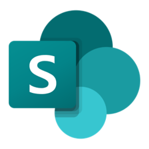
SharePointUse approved policies, product information and working files. Agree the source versions, access and who may update them.
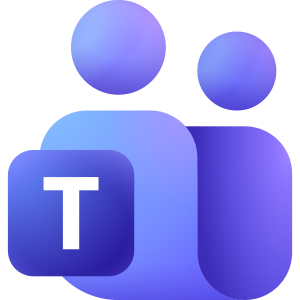
TeamsAsk questions, share context and receive updates. Bring decisions to the right person, with the information they need.
Email a request, forward useful material or copy your colleague into a thread. Sending rules and access are agreed for the role.
Call on your FUSED workplace from a supported AI platform, using the AI subscription you already have.
A familiar face for your customers
Let customers ask questions, provide details and reach the right person through your website. Public replies use the knowledge approved for customers; internal information stays within its agreed permissions.
These FUSED connections are included with managed plans. A perpetual licence allows unlimited API connections; your team configures plugins, and any FUSED configuration work is agreed in the deployment quote. Any Microsoft or other third-party licences you need remain subject to the provider’s terms. Voice, specialist workflows and additional integration work are scoped before you commit.
Connected apps
Keep using the software that suits your business. We assess its supported connections, then build and maintain the links your AI team needs.
An API connection is a way for software to exchange information or carry out an action. It might let your colleague prepare a draft invoice in Xero, update a CRM record or pass approved content to your website.
Research, records, publishing and the handovers between them.

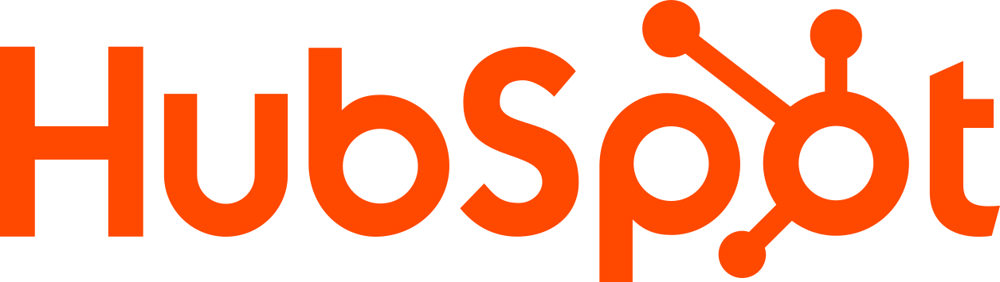
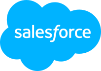
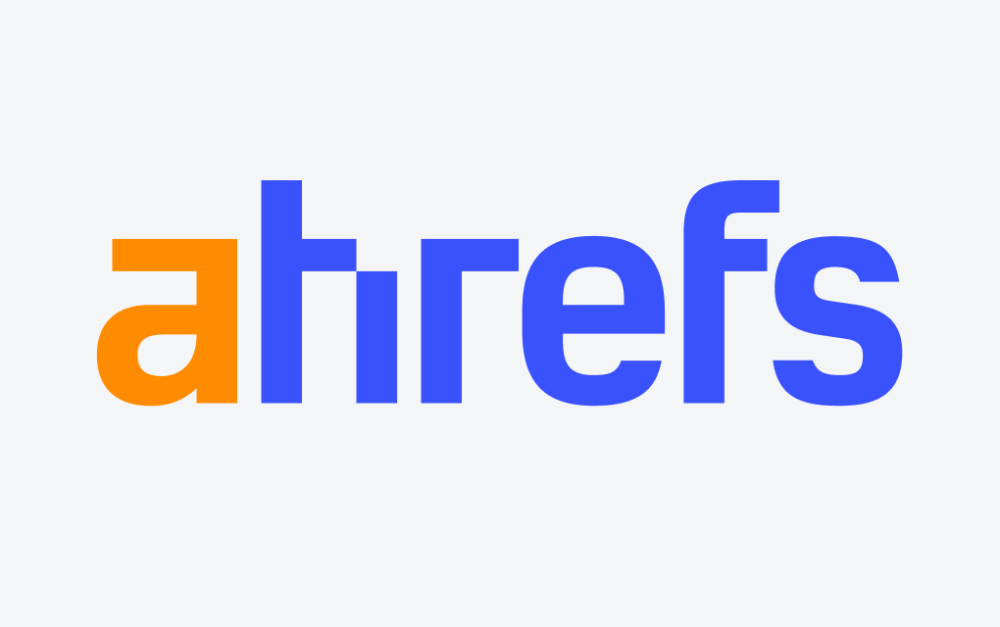

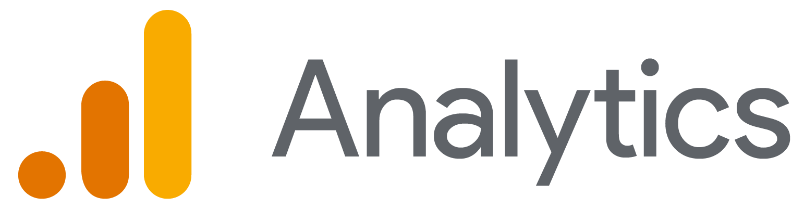
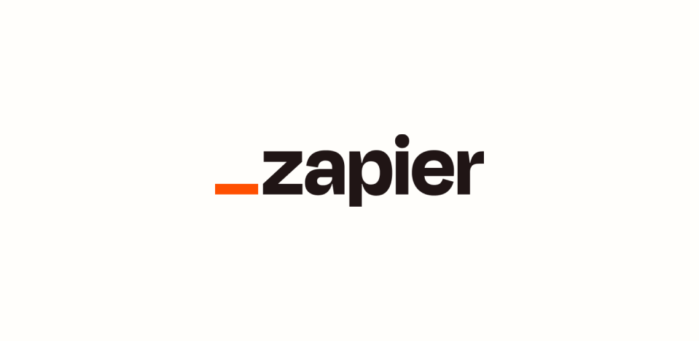
Source material, content review and an agreed hand-off into your learning tools.
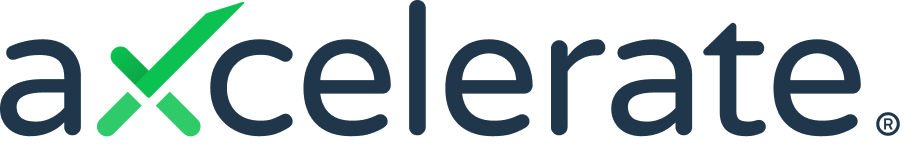
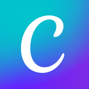
Explore suitable access for reception, appointment administration and approved records.
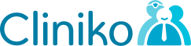
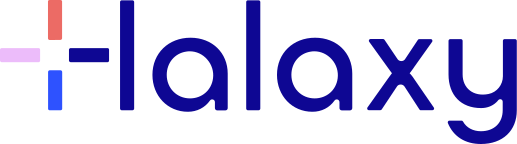
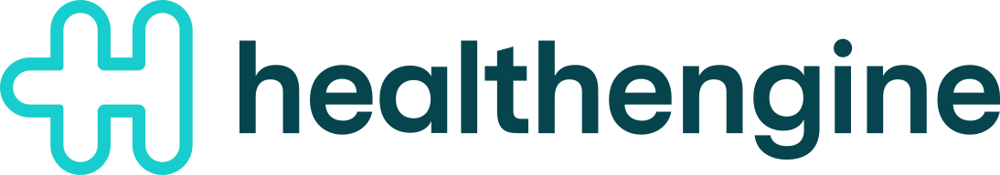
Examples we can assess for your role. Logos identify the software; they do not imply a partnership, endorsement or a prebuilt or certified integration. We confirm compatibility, vendor approval and access before including a connection. Specialist integrations and third-party licences are quoted separately.
Bring your systems together around the work: web growth, sales, recruitment or quality.
Explore specialist roles →Your business stays in control
Your knowledge, outputs and customer-specific work remain yours. We agree where records are kept, who can access them and how useful work returns to your systems.
Messages can be understood, summarised, qualified and returned to the agreed record and owner.
People and colleagues can retrieve source-backed information while gaps and conflicts return to an accountable expert.
The person responsible receives the question, the useful background and what needs deciding.
Triggers, handovers, actions and reporting can support the workflow where the environment justifies them.
Where useful, Microsoft Power Platform can support forms, approvals and reporting, and Dynamics 365 can remain your sales or service record. These connections are scoped around your existing setup.
Your systems remain the agreed home for authoritative records. We identify any processing or storage outside them. When a managed service ends, you retain the agreed customer material; its hosted operation, maintained connections and ongoing improvement end. A separately scoped standalone workflow can run in your own suitable AI tools without a FUSED subscription. Licence and deployment from $12,000 AUD ex GST provides another route: run the FUSED software on your own supported servers and accounts. We agree the licence, migration work and ongoing responsibilities upfront. Explore self-managed deployment.
Built around your systems
If your team uses other tools, we can explore suitable connections. The aim is to fit the work into your business, with access and support arrangements you understand.
For each service, we make clear which systems are used, what information is accessed and who is responsible for each part.
Which inbox, message, form or system starts the task?
What may each colleague see and what is it allowed to do?
Where should the result, evidence or decision be saved?
How does the right person receive the context when a decision is needed?
Designed for the working day
That means accounting for the systems people really use, the records the business must keep and the exceptions that arrive on an ordinary Wednesday afternoon.
Does the connection save your team work?
What can the service read, prepare, change or send—and under whose authority?
How will failures, platform changes, expired access or broken handovers be detected and resolved?
Explore the dedicated service: customer journeys, AI discoverability, public AI colleagues, commerce connections and useful enquiry handovers.
Explore the service →Run the workplace on your network or in your own cloud. We can build the required compute, storage, identity and networking, then deploy the software and hand over to your operators.
Explore the service →One useful conversation
Bring one recurring task or bottleneck. We’ll help define a useful result, what it needs and whether your team or FUSED should run it.